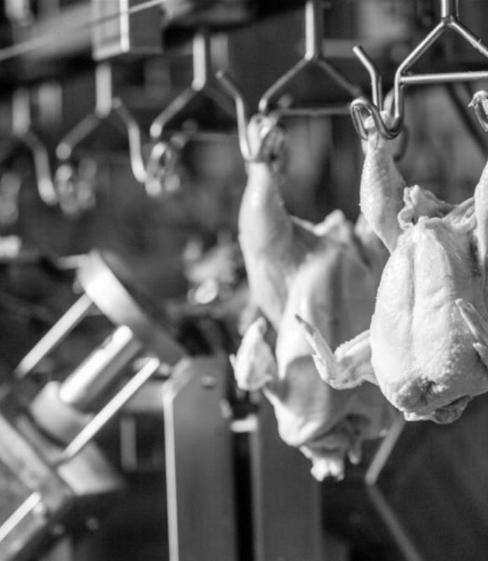
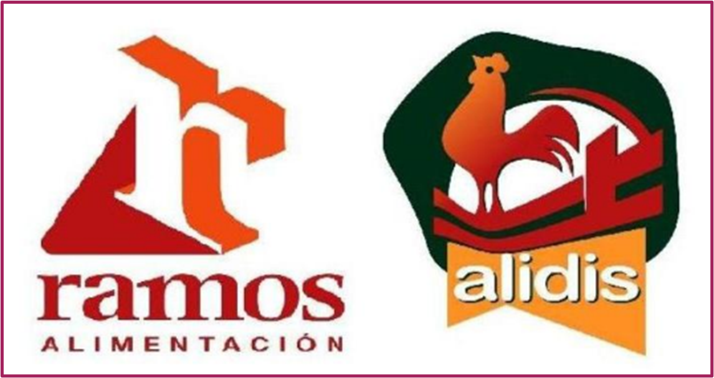

Sus instalaciones son modernas y su última ampliación data de 2017. Dispone de una edificación de 3.300 m2 construidos sobre una finca de 5.000 m2. Están completamente dotadas y actualmente en uso para la actividad.
Incluyen línea completa de despiezado de pollo y maquinaria auxiliar para preparación de embutidos, etc., cámara frigorífica para productos congelados con túnel de congelación y máquina de glaseado para congelados.
Completa sus instalaciones con placas solares para autosuficiencia energética, muelles de carga y descarga, vehículos de transporte refrigerado, oficinas, etc.

Comercializa sus propios productos a través de dos marcas con registro en vigor: “Ramos alimentación” destinada a sus productos congelados y “Alidis” orientada al despiece de pollo.
La empresa está ubicada en el Polígono do Allo, Baio, Zas (A Coruña), en el entorno de la Costa da Morte, junto al eje costero atlántico. Se trata de un polígono con todos los servicios, bien comunicado y próximo a la autovía.
La situación es estratégica atendiendo a sus principales mercados, el español y el portugués.
